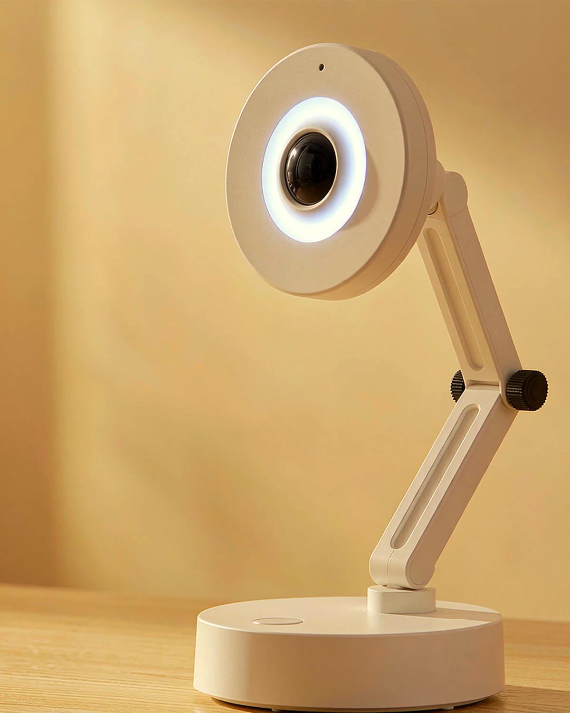
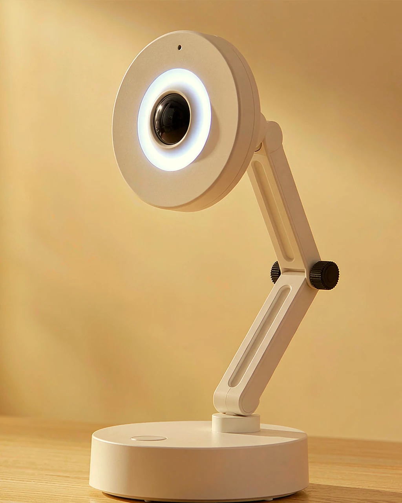
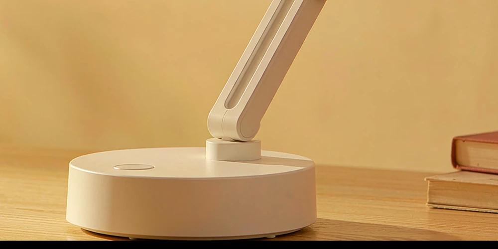
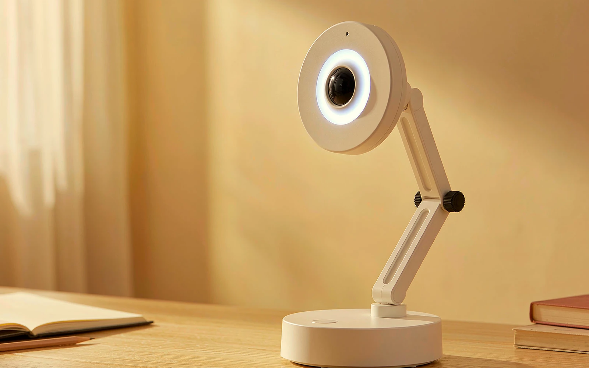

LAMP—1 / AI DESK ROBOT
它听见你，也回应你。
一个放在桌面上的 AI 机器人。
按下说话，它回答问题、替你计时；
开口时转头看你，答完轻轻点头。
- 交互
- VOICE语音问答
- 动作
- BUS SERVO转头 / 点头
- 反馈
- TFT + RING表情 / 状态

01 / WHY IT EXISTS
不是又一盏灯，
是桌面上的另一个在场者。
学习最贵的成本不是查不到答案，而是每次都要拿起手机、解锁、打开应用。注意力被打断一次，要花很久才回到刚才那一页。
LAMP—1 把问答、计时和提醒放回桌面：抬头说一句，它听完、想一下，再用声音、表情和动作回应。
它不面向教室，面向下班后的书桌——那些白天上班、晚上还要学两小时的人。
交互通道
语音 / 动作 / 屏幕 / 灯环
总线舵机
转头 / 点头
TFT 状态屏
表情与计时
WS2812B 灯环
只做状态反馈
以上为阶段一、阶段二的目标配置。RIG-Arm 套件与灯环尚未装到样机，当前仍用开发板验证语音链路。
查看技术与验证边界
HEAD / SERVO JOINT PITCH点头 YAW
转头
02 / MOVEMENT
它会动，
但懂分寸。
总线舵机让头部转向正在说话的人，或在回答结束时轻轻点头。动作慢起慢停，到位后就松开舵机，不留下持续嗡鸣。
22:00—07:00 可进入夜间静音：只保留屏幕与灯环的微光，不做动作与播报。
在样机里转动它03 / FOUR CHANNELS
四个通道，
回应同一句话。
语音、动作、屏幕与灯环不是四个功能，而是同一次交互的四层反馈。先做前三个，再用摄像头补上「看见」。
点击任一通道，查看现有数字样机与工程边界。

VOICE LOOP / PTT 不必掏出手机，也不必先打开一个 App。04 / CONVERSATION
你说一句，
它用动作和表情回答。
按下对话键说一句话，LAMP—1 把问题交给云端大模型，再用语音、屏幕表情和一次点头回应你。不是另一块屏幕，而是桌面上多了一个会接话的实体。
-
01
按下，开口
短按开始拾音；说完再按一次，剩下的交给它。
-
02
听懂，作答
语音转成文字，交给大模型；回答从扬声器里说出来。
-
03
用身体回应
回答时转向你，结束时轻轻点头；屏幕表情与灯环随状态变化。
只有按下对话键才上传语音；断网时，计时与本地状态仍然可用。

05 / INTERACTIVE TWIN
现在，让它
回应你一次。
打开 REV C 整机数字样机：让摄像头发现你、转动双舵机，或进入语音仿真，看看一句话如何变成回答与动作。